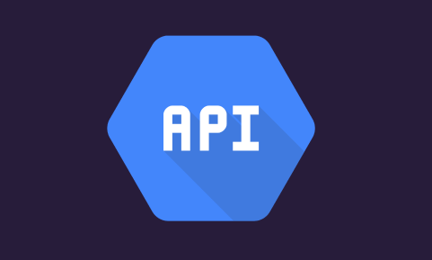
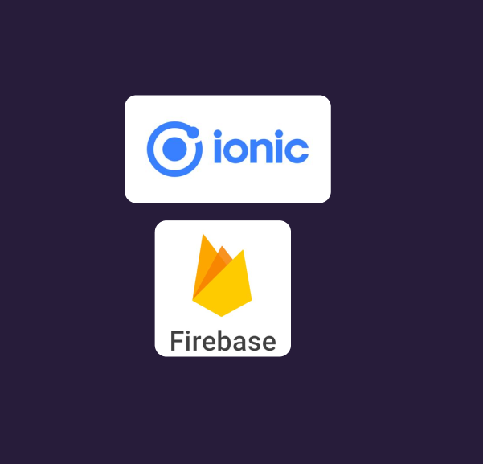

This website was a side project I designed in order to work on my skills. I created fake company, GreenGrid,
focused on
clean and renewable energy. I wanted to design a webiste for a company and be able to walk through the
entire process. I chose
to create a compnay I thought would be neat to have as a client, and one that would work with the theme I
had in mind.
For this website I did more user research to understand what the target audience would be. Because I was
approaching
this as I would a client project, I needed it to reflect the company's mission and be modern in its
design. I found that my users
would be interested in the environment, a minimalistic design would get to the point, and that it needed
to be appealing to adults. All this
led me to having a single page website with no animations, few colors, and images that drew in the
audience.
My main issues when it came it this project were using a new framework and langauge, and getting my APIs
to work. This app
uses two, one for the map, Google Maps API, and one for the ISS's location, Where the ISS at. I ran into
several issues
where my code was expecting a string but was getting an integer, or vice versa. I ended up having some
checks to ensure the data
being passed from the API was a string, and if not I converted it. I had the most issues with the pam
though, getting the
dot to show up on the map and update as the location did was difficult, especially because the dot only
showed up when the app
was deployed, not served locally. Eventually I was able to get it to work successfully.


As this was my first time using most of these tools there was a learning curve for sure. I think the one
skill I gained the most from was hosting on Firebase. I had never hosted an app before and now looking
back
I have continued to use Firebase and gotten more famaliar with Functions, Hosting, and navigating the
console. This
was also the first time I had used Typescript and I enjoyed it. Being the first complete app I had
created, and using
Ionic and React to help, I was able to experience a framework and library and get to understand how they
work and why
they are useful.